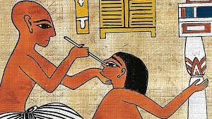
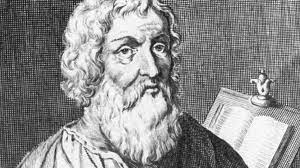

Um pouco de suas origens...
Normalmente, consideramos Imhotep(2655 a.C. – 2600 a.C.) como o primeiro médico, pois dele é um dos primeiros registros de atividades médicas, estando esses registros no Papiro de Edwim Smith. É válido salientar que nesse papiro havia o relato de 48 casos médicos, cada um deles com um diagnóstico e tratamentos cabíveis. Entretanto, por exemplo, na China também há muito sobre a medicina no livro Nei Ching do imperador Huang Ti, o qual passou pela Terra entre 2.698 a.C. a 2.598 a.C.
O "nascimento" da Medicina
Na Grécia Antiga, Hipócrates(460 a.C. – 377 a.C.) foi quem desvinculou a Medicina da Filosofia, tornando-a uma ciência um pouco mais lógica, ao invés de algo com regras gerais e origens únicas. Hipócrates marcou de tal forma o início da Medicina que até os dias atuais os graduados em cursos superiores de Medicina recitam seu juramento. Esse juramento é conhecido como juramento de Hipócrates, que visa deixar claro conceitos morais a serem seguidos por esses profissionais da saúde. O símbolo da Medicina é o Bastão ou Bordão de Asclépio ou Esculápio, que é formado por um bastão no qual se enrola uma serpente. Esse símbolo representa a relação entre doença e cura, algo muito presente na Medicina.
Seu desenvolvimento

Na Idade Média na Europa, as pessoas voltaram a atribuir as causas e as curas de doenças a divindades, principalmente devido a influência da Igreja Católica sobre a população. Por isso, o desenvolvimento da medicina nessa época foi a com outros povos tais como os árabes e judaicos. Dentre as várias descobertas notáveis feitas por eles, estão os fatos de doenças infecciosas serem transmissíveis e a varíola e o sarampo serem diferentes. Somente com o Renascimento que houve uma "onda" mais forte de dúvida das pessoas acerca das doenças e assim retomaram um pouco o conceito da Medicina trago por Hipócrates. Nos séculos seguintes a Medicina se desenvolveu bastante, e a taxa de mortalidade foi sendo reduzida pouco a pouco, além do aumento da expectativa de vida da população.
A Medicina atualmente
No mundo contemporâneo, a Medicina caminha lado a lado com o desenvolvimento da tecnologia, que a auxilia muito por exemplo no diagnóstico de doenças. Com a criação de vacinas na Medicina Moderna, as pessoas agora morrem menos por infecções, as taxas de mortalidade infantil diminuíram, e a população mundial cresceu bastante. Atualmente, os profissionais da saúde contam com vários equipamentos para ajudá-los a cuidar dos indivíduos, além da Medicina estar segmentada em várias áreas, tais como Cardiologia e Ortopedia, por exemplo.
Augusto Cury
Augusto Jorge Cury é um psiquiatra, psicoterapeuta, escritor e cientista brasileiro nascido em Colina, São Paulo. Com vários livros publicados, mais de 30 milhões de livros vendidos somente no Brasil e obras publicadas em mais de 70 países, Dr. Cury é apontado como o escritor mais lido no Brasil atualmente. Autor da Teoria da Inteligência Multifocal, que estuda os papéis da memória, a construção de pensamentos e a formação do Eu, Augusto Cury é uma das poucas pessoas vivas que tem suas teorias como objeto de estudo dentro de cursos de pós-graduação. Além disso, ele também criou o programa Escola da Inteligência, que tem o intuito de ser introduzido na grade curricular e tem o enfoque na educação emocional e desenvolvimento da inteligência.